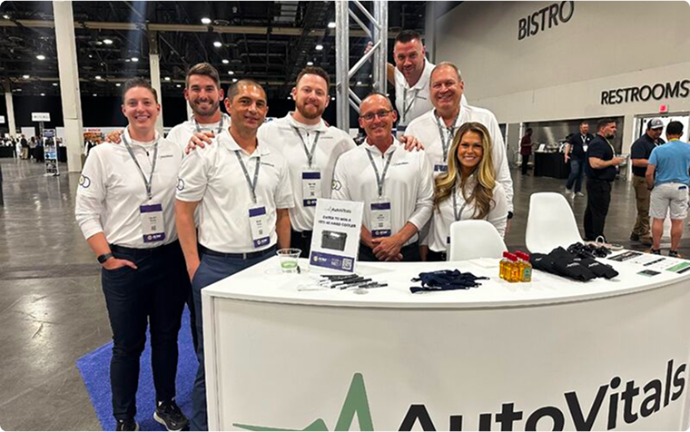
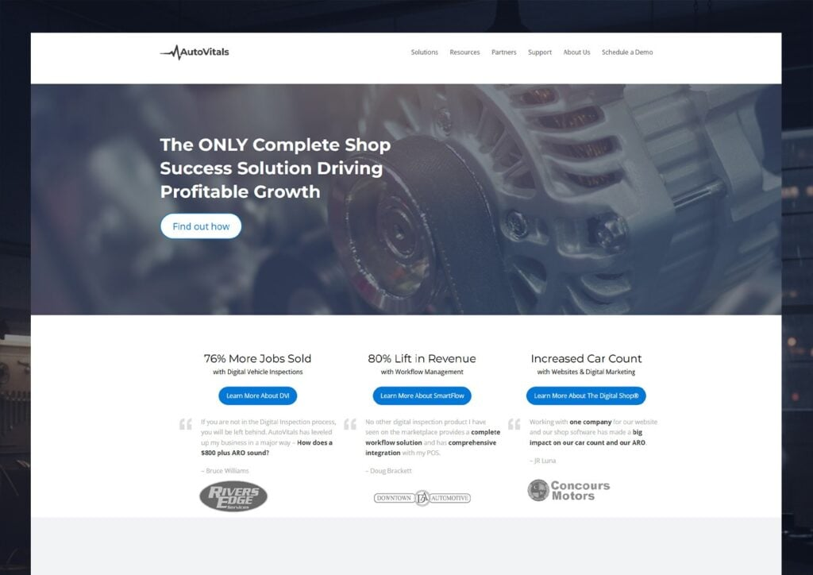
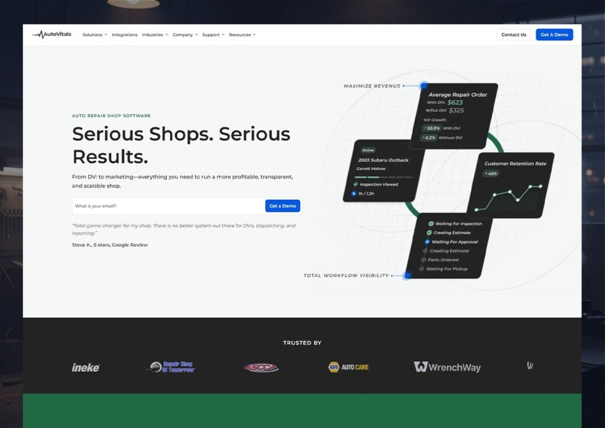
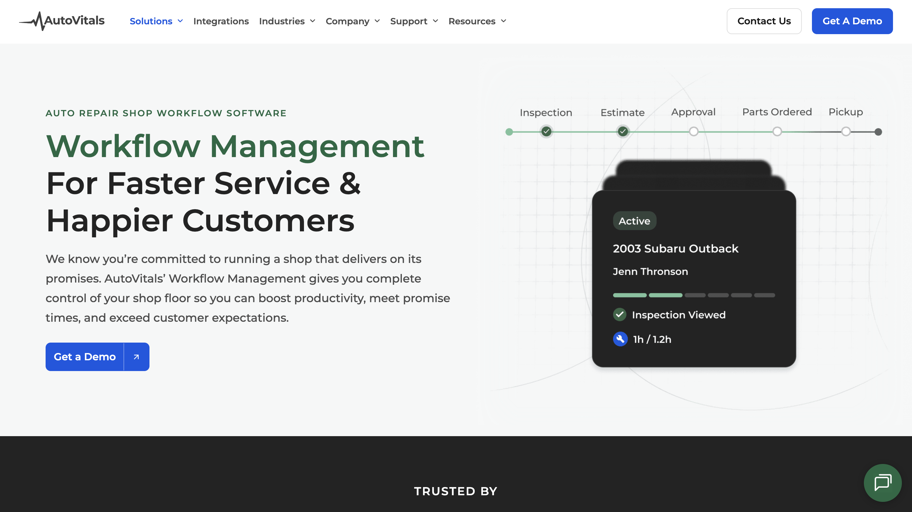

AutoVitals is an all-in-one SaaS platform built specifically for auto repair shops. From digital vehicle inspections to marketing, invoicing, and workflow management, it helps shop owners run smoother, more transparent, and more profitable businesses.
The product was strong. The website just wasn’t pulling its weight.
The messaging felt overly technical. The visuals didn’t really show the platform in action. And demo conversions were stuck at 1.5%.
So we rebuilt the experience from the ground up to clarify the story, showcase the product, and turn more traffic into booked demos.


Feature-Heavy Messaging That Didn’t Connect
The site leaned heavily on technical features and product terminology. While everything was accurate, it wasn’t framed in a way that made the value immediately clear to shop owners.
Auto repair shop managers aren’t looking for software specs. They’re looking for higher approvals, better efficiency, and stronger profitability. The messaging talked about what the platform did, but not clearly enough about what it delivered.
Stock Visuals That Created Distance
The design relied mostly on generic stock photography, with limited product context woven in. That made it harder for visitors to picture how the platform actually worked in their day-to-day operations.
For a powerful SaaS tool, not clearly showing the product created unnecessary friction and left too much to the imagination.
Minimal Proof and a Weak Demo Experience
Case studies were limited, performance metrics weren’t prominent, and social proof wasn’t consistently layered throughout the journey.
The demo page functioned mostly as a standard form, without reinforcing value or addressing common objections. With conversions sitting around 1.5%, it was clear the experience wasn’t converting the way it should.
Outcome-Driven Messaging That Speaks Their Language
We shifted the focus from features to real business results. Instead of leading with technical terminology, the site now highlights what shop owners actually care about: higher job approvals, larger repair orders, and smoother customer conversations.
Those claims are backed by proof, including a 76% increase in job approvals and a 27% average increase in repair order value, making the business impact clear and credible.
Product-Led Design That Builds Clarity
Stock imagery was replaced with purposeful product visuals that show the platform in action. Screenshots are paired directly with outcome-driven copy, helping visitors quickly understand how each feature supports their goals.
The overall design feels clean and grounded, aligning with a practical audience while still delivering a modern, professional presence.
A Demo Experience Designed to Convert
We strengthened the site structure with expanded solution pages, integration content, and clearer industry segmentation. Case studies, testimonials, and metrics are now layered throughout the experience to build trust at every step.
The demo page evolved into a true conversion hub, complete with social proof, FAQs, and clear expectations. The impact was measurable: demo conversions increased from 1.5% to over 6%.
